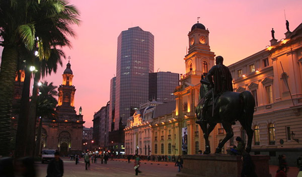
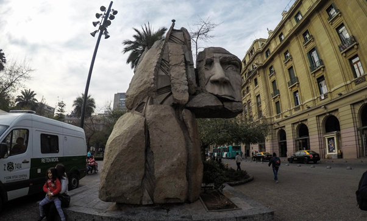

A Plaza de Armas é o marco zero da capital chilena e a principal praça da cidade. Ao redor dela estão importantes prédios históricos, como a Catedral Metropolitana, a Agência Central dos Correios, além de grandes monumentos, como um em homenagem a Pedro Valdivia, o conquistador do Chile. Lá é uma praça com jardim, prédios e estátuas bonitas, vale a pena passar um tempinho lá e tirar umas fotos.

